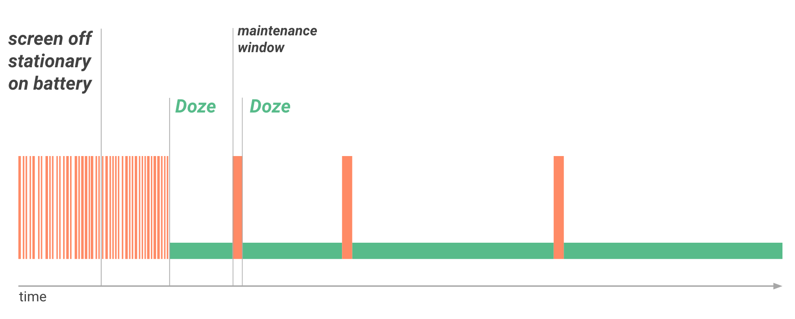

If a user unplugs a device and leaves it stationary, with its screen off, for a period of time, the device goes into Doze mode, where it attempts to keep the system in a sleep state. In Doze mode, the system attempts to conserve battery by restricting apps' access to network and CPU-intensive services. It also prevents apps from accessing the network and defers their jobs, syncs, and standard alarms.
Periodically, the system exits Doze for a brief time to let apps complete their deferred activities. During this maintenance window, the system runs all pending syncs, jobs, and alarms, and lets apps access the network. Over time, the system schedules maintenance windows less and less frequently, helping to reduce battery consumption in cases of longer-term inactivity when the device is not connected to a charger.
As soon as the user wakes the device by moving it, turning on the screen, or connecting a charger, the system exits Doze and all apps return to normal activity.
Doze is particularly likely to affect activities that AlarmManager alarms and timers manage, because alarms in Android 5.1 (API level 22) or lower do not fire when the system is in Doze.
To help with scheduling alarms, Android 6.0 (API level 23) introduces two new AlarmManager methods: setAndAllowWhileIdle() and setExactAndAllowWhileIdle(). With these methods, you can set alarms that will fire even if the device is in Doze.
Note: Neither setAndAllowWhileIdle() nor setExactAndAllowWhileIdle() can fire alarms more than once per 9 minutes, per app.
App Standby allows the system to determine that an app is idle when the user is not actively using it. The system makes this determination when the user does not touch the app for a certain period of time. If the device is unplugged, the system disables network access and suspends syncs and jobs for the apps it deems idle.
The system makes this determination when the user does not touch the app for a certain period of time and none of the following conditions applies:
If the device is idle for long periods of time, the system allows idle apps network access around once a day.
you can use adb commands to force the system to enter and exit Doze and observe your app’s behavior. For details, see Testing with Doze and App Standby.